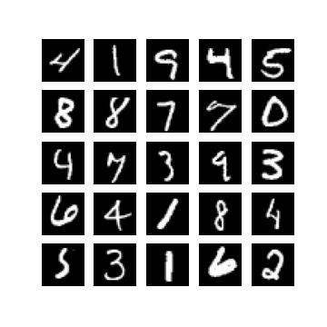

Deep Learning e Visão Computacional usando TensorFlow¶
Este tutorial é um guia rápido de consulta para o mundo do deep learning.
Aqui você encontra por meio de exemplos um pouco de teoria para compreesão e aplicação dos conceitos.
Objetivos¶
- Introdução
- Configuração e Instalação
- Entendendo os Conceitos Básicos
- Perceptron
- Perceptron de Múltiplas Camadas (MLP)
- Retropropagação
- Otimizadores
- Redes Neurais Convolucionais (CNN)
- Implementando uma MLP Simples
- Treinando o Modelo
- Avaliação e Conclusão
Introdução¶
Deep learning é um subconjunto de aprendizado de máquina onde redes neurais artificiais, algoritmos inspirados no cérebro humano, aprendem a partir de grandes quantidades de dados. Da mesma forma, visão computacional é um campo da inteligência artificial que treina computadores para interpretar e compreender o mundo visual.
Configuração e Instalação¶
Primeiro, certifique-se de que Python e TensorFlow estão instalados em seu sistema. Você pode instalar o TensorFlow com o seguinte comando:
Entendendo os Conceitos Básicos¶
Perceptron¶
O Perceptron é um modelo de rede neural simples, geralmente utilizado para classificação binária. Consiste em uma única camada de neurônios, e sua operação pode ser descrita pela fórmula:

Podemos calcular o valor de um neuronio da seguinte forma:
output = activation_function(weighted_sum + bias)
O perceptron é uma das formas mais simples de uma rede neural, utilizado para classificação binária. A saída de um neurônio no perceptron pode ser calculada usando a seguinte fórmula:
Onde:
weighted_sum: é a soma ponderada das entradas (inputs) multiplicadas pelos respectivos pesos (weights).activation_function: refere-se à função que define o limiar de ativação do neurônio, como sigmoid, relu ou softmax.bias: é um termo adicional que permite ajustar a saída ao longo da função de ativação para melhor adaptação dos dados
Perceptron de Múltiplas Camadas (MLP)¶
O MLP (Multilayer Perceptron) é uma extensão do modelo perceptron que inclui múltiplas camadas. A estrutura típica de um MLP consiste em:
Uma camada de entrada, que recebe os dados.Uma ou mais camadas ocultas, que transformam os dados de entrada através de pesos, biases e funções de ativação.Uma camada de saída, que produz a previsão final do modelo.
Cada camada é totalmente conectada à próxima, o que significa que cada neurônio em uma camada está conectado a todos os neurônios na camada seguinte. O MLP é capaz de aprender representações não-lineares dos dados, o que o torna adequado para problemas complexos de classificação e regressão.

Funções de Ativação¶
As funções de ativação são componentes essenciais nas redes neurais, responsáveis por introduzir não-linearidades no modelo. Sem elas, a rede seria essencialmente um modelo linear e incapaz de aprender e representar dados complexos que requerem não-linearidade para sua modelagem. As funções de ativação decidem se um neurônio deve ser ativado ou não, com base no valor da soma ponderada de suas entradas.
Exemplos Comuns:¶
ReLU (Rectified Linear Unit): Oferece uma resposta linear para todos os valores positivos e zero para valores negativos. É a mais usada devido à sua eficiência computacional e à capacidade de mitigar o problema do desaparecimento do gradiente em redes profundas.Sigmoid: Transforma os valores em uma faixa entre 0 e 1, útil especialmente para modelos onde precisamos de uma probabilidade como saída; contudo, é menos usada em camadas ocultas devido a problemas de desaparecimento de gradiente.Tanh (Tangente Hiperbólica): Semelhante à sigmoid, mas transforma os valores em uma faixa entre -1 e 1, centrando os dados e, portanto, melhorando a eficiência do aprendizado nas camadas ocultas.
Retropropagação (Backpropagation)¶
A Retropropagação é uma técnica para treinar redes neurais, permitindo o ajuste dos pesos de conexão após cada iteração de treinamento. Este método utiliza o cálculo do gradiente da função de perda em relação a cada peso, propagando o erro de saída de volta pela rede para atualizar os pesos. Isso minimiza a função de perda ao longo do tempo, melhorando a precisão do modelo ao ajustá-lo mais eficazmente aos dados de treinamento.
Funcionamento:¶
- Calcula-se o gradiente da função de perda para determinar a direção na qual os pesos devem ser ajustados para minimizar o erro.
- Os pesos são atualizados utilizando este gradiente, geralmente com a ajuda de um otimizador como SGD, Adam, entre outros.
- Este processo é repetido para cada lote de dados (batch) durante várias épocas, ajustando progressivamente os pesos para melhorar o desempenho do modelo.
Esses ajustes permitem que a rede aprenda de forma eficiente, refinando seus pesos para reduzir o erro total e aumentar a precisão nas tarefas de classificação ou regressão.
Otimizadores¶
Otimizadores são algoritmos projetados para otimizar o processo de treinamento de uma rede neural, ajustando os pesos e a taxa de aprendizagem. É importante para determinar a rapidez e eficácia com que uma rede neural aprende.
Alguns exemplos comuns incluem:
- SGD (Descida do Gradiente Estocástico)
- Adam
- RMSprop
- Dentre outros, cada um com suas próprias características e adequações a diferentes tipos de problemas e conjuntos de dados.

Redes Neurais Convolucionais (CNN)¶
Redes Neurais Convolucionais (CNNs) são uma classe especializada de redes neurais profundas que são particularmente para tarefas de processamento de imagem e vídeo. Utilizam o processo de convolução para capturar características visuais importantes como bordas, texturas e padrões mais complexos sem a necessidade de intervenção ou extração manual de características.
Principais Componentes¶
- Camadas Convolucionais: O coração de uma CNN. Estas camadas utilizam filtros que realizam a convolução sobre a entrada para criar mapas de características que resumem as presenças de características específicas na entrada.
- Função de Ativação: Normalmente, uma função ReLU é aplicada após cada convolução para introduzir não-linearidades ao modelo, ajudando-o a aprender mais complexidades.
- Camadas de Pooling: Seguem as camadas convolucionais e são usadas para reduzir as dimensões dos mapas de características, o que ajuda a diminuir o cálculo necessário e também controla o overfitting.
- Camadas Densas (Fully Connected Layers): Após várias camadas convolucionais e de pooling, a rede utiliza uma ou mais camadas densas onde a classificação final é realizada baseada nas características extraídas anteriormente.
Funcionamento¶
Uma CNN recebe uma imagem como entrada, que é passada através de uma série de camadas convolucionais com filtros (kernels), camadas de pooling, e eventualmente camadas densas para produzir uma saída, que pode ser uma classificação ou outra interpretação da imagem. Em cada camada convolucional, a rede aprende a identificar características cada vez mais complexas. À medida que os dados avançam pela rede, a "visão" da rede torna-se cada vez mais abstrata, permitindo que ela reconheça grandes padrões compostos por características menores capturadas nas primeiras camadas.
Aplicações¶
As CNNs têm sido usadas com grande sucesso em uma variedade de aplicações de visão computacional:
Reconhecimento de Imagens: Identificação de objetos, pessoas, cenas e atividades em imagens.Classificação de Imagens: Classificar imagens em categorias pré-definidas.Detecção de Objetos: Localizar e identificar múltiplos objetos dentro de uma única imagem.Segmentação Semântica: Classificar cada pixel de uma imagem em uma categoria de objeto, permitindo uma compreensão detalhada da cena.
Implementando um MLP Simples¶
Vamos implementar um exemplo simples de uma rede neural multicamadas (MLP) usando TensorFlow, aplicada ao conjunto de dados MNIST, que consiste em imagens de dígitos escritos à mão:

Importando o dataset e bibliotecas¶
Começamos importando a biblioteca tensorflow e o dataset mninst. Esse dataset é bem famoso e faz parte dos do da biblioteca tensorflow. Precisamos fazer uma transformação simples nas imagens de entrada para normalizar entre 0 e 1.
import tensorflow as tf
# Carregando o conjunto de dados MNIST
mnist = tf.keras.datasets.mnist
(x_train, y_train), (x_test, y_test) = mnist.load_data()
# Normalizando os dados
x_train, x_test = x_train / 255.0, x_test / 255.0
Criando a Rede Neural¶
Para construir nossa rede neural, utilizaremos a classe Sequential do TensorFlow, que permite compor modelos camada por camada de maneira simples e direta. Aqui está o detalhamento de cada componente utilizado:
Warning
Substitua os campos <QUANTIDADE_NEURONIOS>e <FUNCAO_ATIVACAO> nos lugares indicados para configurar o número de neurônios e as funções de ativação.
Tip
A quantidade de neurônios na camada de saída deve ser igual à quantidade de classes a serem preditas no MNIST, que são 10 (dígitos de 0 a 9).
Tip
Utilize a função de ativação relu para as camadas intermediárias, pois ajuda a resolver o problema do desaparecimento do gradiente em redes profundas. Para a camada de saída, use softmax para converter as saídas em probabilidades de pertencimento às classes.
Componentes do Modelo¶
Sequential: Esta é a classe base para definir uma pilha de camadas de rede neural. Você começa com uma lista vazia e adiciona camadas usando a notação de lista. Cada camada adicionada é empilhada sobre a anterior, o que facilita a modelagem de um fluxo de dados direto (feedforward).Flatten: Transforma a matriz 2D de entrada (28x28 pixels da imagem) em um vetor 1D. Isso é necessário porque a primeira camada densa (Dense) espera um vetor como entrada.Dense: É a camada de neurônios densamente conectados ou completamente conectados. Cada neurônio recebe entrada de todos os neurônios da camada anterior, mantendo uma conexão densa.: Aqui você define quantos neurônios deseja nesta camada. : Define a função de ativação a ser usada. A função relu é comum para camadas internas.
# Criando o modelo MLP
model = tf.keras.models.Sequential([
tf.keras.layers.Flatten(input_shape=(28, 28)),
tf.keras.layers.Dense(<QUANTIDADE_NEURONIOS>, activation=<FUNCAO_ATIVACAO>),
tf.keras.layers.Dense(<QUANTIDADE_NEURONIOS>, activation=<FUNCAO_ATIVACAO>)
])
Compilando o Modelo¶
Agora, vamos compilar o modelo utilizando o otimizador Adam e a função de perda sparse_categorical_crossentropy, adequada para classificação de múltiplas classes onde as classes são fornecidas como números inteiros:
Warning
Substitua os campos <KEY> por valores convenientes. Para <METRICA> utilize accuracy.
Compilando o Modelo¶
Agora, vamos compilar o modelo passando os conjuntos de dados x_train e y_train, definindo a quantidade épocas de treinamento e ajustando um subset de 20% para validação.
Warning
Substitua os campos <KEY> por valores convenientes. Defina 30 épocas e 0.2 de valiçao.
# Treinando o modelo
epocas_hist = model.fit(<X_TREINO>, <Y_TREINO>, epochs=<EPOCAS>, validation_split=<VALIDACAO>)
Visualizando o historico de treinamento¶
O historico de treinamento é salvo na variavel epocas_hist, podemos visualizar utlizando o pandas
import pandas as pd
df_historico = pd.DataFrame(epocas_hist.history)
df_historico.info()
df_historico[['loss','val_loss']].plot(); plt.show();
df_historico[['accuracy','val_accuracy']].plot(); plt.show();
Avaliação e Conclusão¶
Após o treinamento, avaliamos o modelo no conjunto de teste para verificar sua acurácia e a perda:
Warning
Substitua os campos <KEY> por valores convenientes.
test_loss, test_acc = model.evaluate(<X_TESTE>, <Y_TESTE>)
print(f"Teste Acurácia: {test_acc:.3f}, Teste Loss: {test_loss:.3f}")
Salvando o modelo¶
Importando uma Imagem e Usando com o Modelo Treinado¶
Para usar uma imagem própria e verificar como o modelo MLP prevê o dígito, precisamos garantir que a imagem seja processada de maneira semelhante ao conjunto de dados MNIST. A imagem deve ser em escala de cinza, de tamanho 28x28 pixels, e normalizada.
import tensorflow as tf
from tensorflow.keras.preprocessing import image
import numpy as np
import matplotlib.pyplot as plt
# Carregando o modelo treinado (certifique-se de que o modelo está disponível)
model = tf.keras.models.load_model('mnist_mlp_model.h5')
# Função para carregar e preparar a imagem
def load_and_prepare_image(filepath):
img = image.load_img(filepath, color_mode='grayscale', target_size=(28, 28))
img = image.img_to_array(img)
img = img.reshape(1, 28, 28)
img = img.astype('float32')
img /= 255.0
return img
# Caminho para a sua imagem
filepath = 'path_to_your_image.png' # escolha uma imagem com um numero simples
# Carregando e preparando a imagem
img = load_and_prepare_image(filepath)
# Fazendo a previsão
predictions = model.predict(img)
predicted_digit = np.argmax(predictions)
# Mostrando a imagem e a previsão
plt.imshow(img.reshape(28, 28), cmap='gray')
plt.title(f'Previsão: {predicted_digit}')
plt.show()